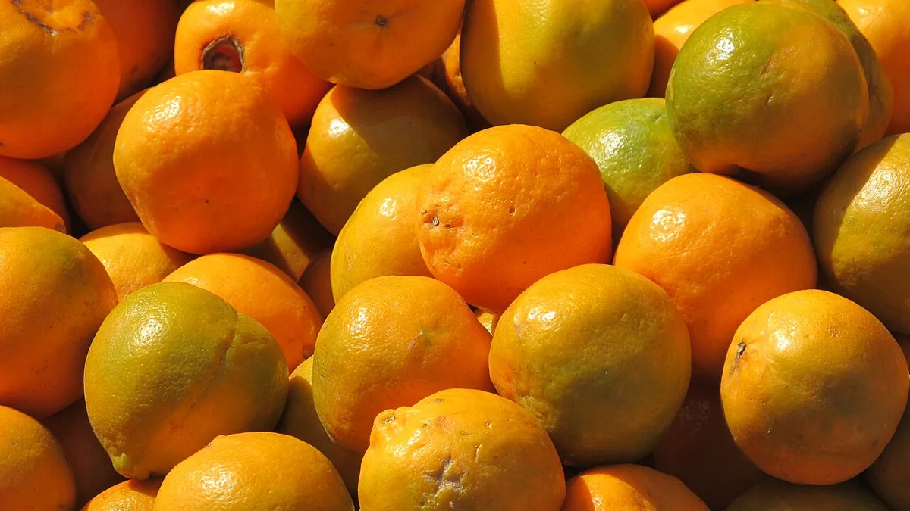

संत्रा फळगळ — कारण और उपाय
Nagpur Santra Fruit Drop — Causes, Identification & Control
एक संत्रा के पेड़ पर डेढ़–दो लाख तक फूल आते हैं और 99% गिर जाना सामान्य है। असली नुक़सान अगस्त से शुरू होने वाली तीसरी गळ करती है — और उसकी वजह अक्सर रोग नहीं, तनाव होता है।
✍️ Kunal Rajput — KrashiMitra⏱️ 10 मिनट पढ़ें📅 अगस्त 2026

नागपुरी संत्रा — अगस्त से शुरू होने वाली तीसरी गळ में ऐसे ही पकते फल पीले पड़कर टूट जाते हैं।
गिरा फल उठाइए — वजह उसके देठ में लिखी है
📉
तीसरी गळ
अगस्त से, असली नुक़सान
🦋
25/हेक्टेयर
फळमाशी सापळे, अगस्त से
🌿
1–3.5%
फल ही आख़िर तक टिकते हैं
📖
भूमिका
अगस्त आते ही विदर्भ के संत्रा बाग़ों में वही नज़ारा शुरू होता है — सुबह पेड़ के नीचे पीले पड़े फल का ढेर। हाथ लगाते ही फल टूटकर गिर जाता है। किसान समझता है कि कोई रोग लग गया, और घबराकर दवा का छिड़काव शुरू कर देता है। लेकिन संत्रा की फळगळ एक नहीं, चार अलग-अलग वजहों से होती है — और हर वजह का इलाज अलग है।
पहले एक बात साफ़ कर लीजिए: संत्रा के एक पेड़ पर 10,000 से डेढ़–दो लाख तक कलियाँ और फूल आते हैं, और इनमें से 99% गिरना बिल्कुल सामान्य है। पेड़ की पोषण-शक्ति के हिसाब से आख़िर तक सिर्फ़ 1 से 3.5% फल टिकते हैं। असली चिंता तीसरी गळ की है, जो अगस्त से शुरू होती है और सीधे जेब पर पड़ती है। इस लेख में — चारों तरह की गळ की पहचान, हर एक की वजह, और डॉ. पं. दे. कृ. वि. अकोला की सिफ़ारिश के अनुसार सही मात्रा में उपाय।
विज्ञापन
🔍
तीन गळ — कौन सी सामान्य है, कौन सी नुक़सान वाली
गिरे हुए फल को उठाकर उसका देठ (डंठल) देखिए। यही एक चीज़ बता देती है कि यह कौन सी गळ है।
गळ
कब और कैसी दिखती है
चिंता की बात?
पहली गळ
फूल खिलने के तुरंत बाद; फूल और नन्हे फल देठ समेत गिरते हैं
सामान्य — परागकण की कमी या मौसम का तनाव
दूसरी गळ
फूल के 1–2 महीने बाद; कंचे के आकार के फल बिना देठ गिरते हैं, देठ के चारों ओर हल्की फूली रिंग बनती है और फल चकती से फिसल जाता है
सामान्य — पेड़ ख़ुद अपना बोझ हल्का करता है
तीसरी गळ
अगस्त से शुरू; अधपके से लेकर काढणी-पूर्व तक; फल पीला पड़ता है और हाथ लगाते ही टूट जाता है
यही असली आर्थिक नुक़सान है
💡
तीसरी गळ के पीछे का विज्ञान: जब भी पेड़ तनाव में आता है — पानी की कमी या ज़्यादती, कार्बन-नत्र का असंतुलन, पालवी (पत्तियों) की कमी, अन्नद्रव्यों की कमी, गरम सूखी हवा — तब पेड़ में इथिलीन गैस बनती है। यही गैस फल और टहनी के बीच की कोशिकाओं को तोड़ देती है, और फल गिर जाता है। यानी तीसरी गळ ज़्यादातर तनाव का नतीजा है, किसी एक रोग का नहीं।
🧭
पहले वजह पहचानिए, फिर दवा उठाइए
गिरा हुआ फल उठाइए, काटकर देखिए, और नीचे की सूची से मिलाइए। बिना पहचाने किया गया छिड़काव पैसा और समय दोनों बर्बाद करता है।
देठ के पास काली रिंग, फल सड़ा हुआ: कोलेटोट्रीकम — देठ सुकणे / stem-end rot।
ज़मीन के पास वाले हरे फलों पर भूरे-करड़े धब्बे, गिरने के बाद सफ़ेद बुरशी: फायटोप्थोरा — ब्राउन रॉट।
देठ के पास हल्का पीला चट्टा, दबाने पर मुलायम, बाद में करड़ा: डिप्लोडिया — इसका प्रकोप उन बाग़ों में ज़्यादा है जहाँ पेड़ पर सूखी टहनियाँ (सल) बहुत हैं।
फल पर सूई जैसा छेद, दबाने पर आंबा हुआ रस निकले, फल से दुर्गंध और छोटी मक्खियाँ: रस शोषक पतंग।
दबाने पर छेद से पिचकारी जैसे फव्वारे, अंदर पैर रहित सफ़ेद अळ्या: फळमाशी।
पत्तियाँ पीली, मध्यशिरा के दोनों तरफ़ असमान पीलापन, फल आधा पीला-आधा हरा, बीज काले और सिकुड़े, रस कड़वा: ग्रीनिंग रोग (सिट्रस सिल्ला से फैलता है)।
कोई धब्बा नहीं, फल बस पीला पड़कर गिर रहा है: शारीरिक गळ — पानी, पोषण या पालवी की गड़बड़ी।
🍄
बुरशीजन्य फळगळ — दवा और सही मात्रा
बारिश में बुरशी का संक्रमण फल के देठ और छिलके के जोड़ पर होता है, वहाँ काला-भूरा धब्बा बनता है, वह हिस्सा सड़ता है और फल गिर जाता है। जिन पेड़ों पर सूखी टहनियाँ ज़्यादा हैं, वहाँ बुरशी के बीजाणु ज़्यादा बनते हैं — इसीलिए सल निकालना दवा से पहले आता है।
बुरशी
पहचान
दवा और मात्रा (प्रति लीटर पानी)
फायटोप्थोरा — फल पर भूरा रॉट
ज़मीन के पास वाले हरे फलों पर भूरे-करड़े धब्बे; गिरने के बाद सतह पर सफ़ेद बुरशी
फोसेटिल-एएल 2.5 ग्राम, या कॉपर ऑक्सिक्लोराइड 50 WP 2.5 ग्राम, या कैप्टान 75 WP 2.5 ग्राम
कोलेटोट्रीकम — देठ सुकणे
देठ के पास काली रिंग जो बढ़ती जाती है; कोवळी टहनियों के पत्ते सूखना
बोर्डो मिश्रण 0.6%, या कॉपर ऑक्सिक्लोराइड 50 WP 2.5 ग्राम, या कार्बेन्डाजिम 50 WP 1 ग्राम
डिप्लोडिया — फल की कूज
देठ के पास हल्का पीला चट्टा, दबाने पर मुलायम, बाद में करड़ा-भूरा
बेंझिमिडाझोल वर्ग का बुरशीनाशक — लेबल के अनुसार
दवा से पहले ये मुफ़्त काम कीजिए:
गिरे पत्ते और फल हटाइए: उन्हें खेत में पड़ा रहने देने से रोग की तीव्रता बढ़ती है और संक्रमण तेज़ी से फैलता है। वाफा साफ़ रखिए।
पानी बाहर निकालिए: बाग़ के ढाल की तरफ़ से पानी निकालिए — जहाँ पानी जमा रहता है, वहीं फायटोप्थोरा सबसे ज़्यादा लगता है।
गिरे फल गड्ढे में दबाइए: बाग़ में फलों का ढेर कहीं मत लगाइए — वही कीट और रोग फैलाने का काम करता है।
विज्ञापन
🦋
रस शोषक पतंग — अगस्त से अक्टूबर का सबसे बड़ा दुश्मन
इस कीट से सबसे ज़्यादा फळगळ अगस्त से अक्टूबर के बीच होती है। पतंग शाम को सक्रिय होता है, पकते हुए फल में सूई जैसी सोंड घुसाकर रस चूसता है, और उसी छेद से रोगजंतु अंदर घुसकर फल सड़ा देते हैं। ऐसा फल दबाने पर छेद से आंबा हुआ रस बाहर आता है, गिरने के बाद पूरा सड़ जाता है, दुर्गंध देता है और उस पर छोटी मक्खियाँ भिनभिनाती हैं।
इसका इलाज दवा नहीं, तरीक़े हैं — और ज़्यादातर मुफ़्त हैं:
विषारी आमिष (ज़हरीला चारा):मैलाथियान 50 EC 20 मि.ली. + 200 ग्राम गुड़ + गिरे हुए फलों का 400–500 मि.ली. रस — 2 लीटर पानी में मिलाकर चौड़े मुँह की दो बोतलों में भरिए और हर 25–30 पेड़ पर एक के हिसाब से बाग़ में रखिए।
धुआँ कीजिए: एक दिन छोड़कर, शाम 7 से रात 10 बजे के बीच, नम घास जलाकर उस पर नीम की गीली टहनियाँ/पत्ते रखकर धुआँ कीजिए।
आसपास की बेलें नष्ट कीजिए: बाग़ के चारों ओर उगी गुळवेल, वासनवेल और चांदवेल जैसी बेलें इस पतंग की परिपोषक हैं — इन्हें ख़त्म कीजिए। यह सबसे उपेक्षित और सबसे असरदार कदम है।
नीम का प्रयोग: प्रकोप दिखते ही 5% निंबोळी अर्क (500 ग्राम / 10 लीटर पानी) या नीम तेल 100 मि.ली. / 10 लीटर पानी छिड़कें।
रात में टॉर्च: तेज़ रोशनी की धार डालने पर पतंग सुस्त हो जाते हैं — उन्हें पकड़कर मिट्टी के तेल मिले पानी में डालकर नष्ट कीजिए।
🪤
फळमाशी के लिए: नर मक्खियों को फँसाने वाले सापळे (ट्रैप) प्रति हेक्टेयर 25 के हिसाब से अगस्त के दूसरे हफ़्ते से — या तोड़ाई से लगभग 2 महीने पहले से — पेड़ों पर टाँग दीजिए। साथ में बाग़ के गिरे फल बीनकर गड्ढे में दबाते रहिए।
⚠️
फूल आते समय सिट्रस सिल्ला दिखे तो: डायमेथोएट 2 मि.ली. या इमिडाक्लोप्रिड 0.5 मि.ली. प्रति लीटर पानी — 15 दिन के अंतर पर दो छिड़काव। यही कीट ग्रीनिंग रोग फैलाता है, इसलिए इसे रोकना दो काम एक साथ करता है।
🌿
शारीरिक गळ रोकने के उपाय — जड़ से
यहाँ सबसे अहम बात यह है: पत्ते ही पेड़ का कारख़ाना हैं। पालवी पर्याप्त न हो तो अन्नसाठा बनता ही नहीं, और फिर या तो नई फूट निकलती है या लगे हुए फल गिर जाते हैं। इसलिए फल का बोझ पालवी के हिसाब से ही रखिए — और याद रखिए कि पत्ते पर्याप्त होंगे, तभी किसी भी छिड़काव का अपेक्षित असर होगा।
काढणी के बाद छँटाई कीजिए: सूखी टहनियों में छिपे रोगकारक निकल जाएँ, इसके लिए टहनी का 5 सेंमी हरा हिस्सा लेकर सल काटिए, हर बार औज़ार निर्जंतुक कीजिए, और छँटाई के बाद पेड़ पर बुरशीनाशक छिड़किए।
फलधारणा के दौरान गहरी खुदाई मत कीजिए: इससे जड़ें टूटती हैं, निकास बिगड़ता है और फळगळ बढ़ जाती है।
पानी न ज़्यादा, न कम: गर्मी में बनाया आळे बारिश से पहले तोड़ दीजिए। अगस्त-सितंबर में बाग़ में पानी जमा रहा तो जड़ें सड़ती हैं और फळगळ होती है — पानी जमता हो तो दो या तीन क़तारों पर एक चर ढाल की दिशा में काटकर पानी बाहर निकालिए।
तणनाशक से बचिए: लगातार पानी जमा हो या मौसम गरम हो, तब बाग़ में तणनाशक का प्रयोग मत कीजिए — ज़्यादा वाफसा स्थिति में और ज़्यादा मात्रा में किया गया छिड़काव सीधे फळगळ बढ़ाता है।
दस साल से ऊपर के एक पेड़ के लिए सिफ़ारिश की गई मात्रा:
घटक
मात्रा प्रति पेड़
शेणखत (गोबर की खाद)
50 किलो
निंबोळी पेंड (नीम खली)
7.5 किलो
नत्र (N) — अमोनियम सल्फेट से
800 ग्राम
स्फुरद (P)
300 ग्राम
पालाश (K)
600 ग्राम
व्हॅम (VAM)
500 ग्राम
स्फुरद विरघळवणारे जीवाणु (PSB)
100 ग्राम
अॅझोस्पिरीलम
100 ग्राम
ट्रायकोडर्मा
100 ग्राम
स्यूडोमोनास
100 ग्राम
💧
सूक्ष्म अन्नद्रव्य और संजीवक का छिड़काव
छिड़काव
मात्रा
कब
सूक्ष्म अन्नद्रव्य
ज़िंक सल्फेट 5 ग्राम + फेरस सल्फेट 1 ग्राम + बोरॉन 1 ग्राम — प्रति लीटर पानी
आंबिया के फलों के लिए जुलाई–अगस्त; मृग के फलों के लिए अक्टूबर–नवंबर
संजीवक + यूरिया
NAA 1 ग्राम या जिब्रेलिक अॅसिड 1.5 ग्राम या 2,4-D 1.5 ग्राम + यूरिया 1 किलो + कार्बेन्डाजिम 50 WP 100 ग्राम — 100 लीटर पानी में
फळगळ दिखते ही; दूसरा छिड़काव 15 दिन बाद
पत्ते कम व पीलट हरे हों तो
कैल्शियम अमोनियम नायट्रेट 1 किलो + जिब्रेलिक अॅसिड 1.5 ग्राम + कार्बेन्डाजिम 100 ग्राम — 100 लीटर पानी में
पालवी कमज़ोर दिखते ही
ग्रीनिंग रोग में
0:52:34 विद्राव्य खाद 1 किलो + टेट्रासायक्लीन 6 ग्राम — 100 लीटर पानी में; साथ में ज़मीन से ज़िंक सल्फेट 200 ग्राम + फेरस सल्फेट 200 ग्राम + बोरॅक्स 200 ग्राम
सिट्रस सिल्ला का नियंत्रण करने के बाद
⚠️
यह बात ज़रूर पढ़िए। ऊपर दी गई कुछ सिफ़ारिशें — विशेषकर NAA, जिब्रेलिक अॅसिड, 2,4-D, कार्बेन्डाजिम, टेट्रासायक्लीन और कॉपर ऑक्सिक्लोराइड — मूल स्रोत में “संशोधन पर आधारित, लेबल क्लेम नहीं” के रूप में चिह्नित हैं। यानी ये विश्वविद्यालय के प्रयोगों से निकली सिफ़ारिशें हैं, पर संत्रा के लिए इनका CIB&RC लेबल क्लेम नहीं है। इस्तेमाल से पहले दवा का लेबल पढ़िए और अपने नज़दीकी KVK या कृषी विभाग से पुष्टि कीजिए। स्रोत: डॉ. योगेश इंगळे व डॉ. दिनेश पैठणकर, अ.भा.स. संशोधन प्रकल्प (फळे), डॉ. पं. दे. कृ. वि., अकोला।
🚫
ये गलतियाँ कभी न करें
हर गळ को रोग समझकर दवा छिड़कना — पहली और दूसरी गळ सामान्य है। उस पर दवा डालना सिर्फ़ ख़र्च है।
गिरे फल बाग़ में ही पड़े रहने देना — यही अगले हफ़्ते की बुरशी और अगले महीने की फळमाशी की नर्सरी है। गहरे गड्ढे में दबाइए।
बाग़ में पानी जमा रहने देना — अगस्त-सितंबर की जमा नमी जड़ सड़ाती है, और वहीं से सबसे बड़ी फळगळ आती है।
फलधारणा के समय गहरी खुदाई करना — जड़ें टूटती हैं और गळ बढ़ती है।
पालवी देखे बिना ज़्यादा फल रखना — पत्ते कम और फल ज़्यादा हों, तो पेड़ ख़ुद ही फल गिरा देगा।
सल (सूखी टहनियाँ) न निकालना — डिप्लोडिया और कोलेटोट्रीकम दोनों वहीं पलते हैं; छँटाई के औज़ार हर बार निर्जंतुक कीजिए।
गरम मौसम या जमा पानी में तणनाशक डालना — यह सीधे फळगळ बढ़ाता है।
आसपास की गुळवेल-वासनवेल छोड़ देना — रस शोषक पतंग वहीं से आता है; दवा उसे नहीं रोक पाएगी।
🗓️
साल भर का कैलेंडर — कब क्या करें
महीना
ज़रूरी काम
जून–जुलाई
मृग बहार; बारिश से पहले आळे तोड़ें, निकास के चर काटें, गिरे पत्ते-फल हटाएँ
जुलाई–अगस्त
आंबिया के फलों के लिए सूक्ष्म अन्नद्रव्य छिड़काव (ज़िंक + फेरस + बोरॉन)
अगस्त (दूसरा हफ़्ता)
फळमाशी के सापळे लगाएँ — 25 प्रति हेक्टेयर; रस शोषक पतंग के लिए आमिष और धुआँ शुरू करें
अगस्त–सितंबर
तीसरी गळ का चरम — पानी जमा न होने दें, संजीवक छिड़काव करें, गिरे फल रोज़ दबाएँ
अक्टूबर–नवंबर
मृग के फलों के लिए सूक्ष्म अन्नद्रव्य छिड़काव; पतंग का प्रकोप अक्टूबर तक रहता है
काढणी के बाद
सल की छँटाई (5 सेंमी हरा हिस्सा लेकर), औज़ार निर्जंतुक, बुरशीनाशक छिड़काव
छँटाई के बाद
शेणखत, निंबोळी पेंड और सिफ़ारिश की खाद मात्रा दें
✅
निष्कर्ष
तीन बातें याद रखिए। पहली — 99% कली-फूल का गिरना सामान्य है; डरिए सिर्फ़ अगस्त से शुरू होने वाली तीसरी गळ से। दूसरी — गिरा फल उठाकर पहले वजह पहचानिए: देठ की काली रिंग, सूई का छेद, भूरा रॉट या सिर्फ़ पीलापन — चारों का इलाज अलग है। तीसरी — बाग़ में जमा पानी और गिरे हुए फल ही सबसे बड़े और सबसे सस्ते सुधार हैं; ये दो काम कर लीजिए तो आधी दवा बच जाएगी।
संत्रा की फळगळ दवा से नहीं, तनाव घटाने से रुकती है — और तनाव जड़ के पास बनता है, पत्ते पर नहीं।
⚠️
हर मात्रा और सिफ़ारिश अपने बाग़ पर लागू करने से पहले अपने ज़िले के KVK, कृषी विज्ञान केंद्र या तालुका कृषी अधिकारी से पुष्टि कीजिए — मिट्टी, पानी और बहार के हिसाब से सलाह बदलती है। कोई भी दवा ख़रीदने से पहले उसका CIB&RC लेबल पढ़िए और यह देखिए कि उस पर संत्रा/लिंबूवर्गीय फसल का उल्लेख है या नहीं।
विज्ञापन
❓
अक्सर पूछे जाने वाले सवाल
1संत्रा के फल गिरने का कारण क्या है?
संत्रा की फळगळ चार अलग वजहों से होती है — शारीरिक (तनाव), बुरशीजन्य, कीटजन्य और ग्रीनिंग रोग। इनमें अगस्त से शुरू होने वाली तीसरी गळ ही आर्थिक नुक़सान करती है, और उसकी मुख्य वजह तनाव है — पानी की कमी या जमाव, पालवी की कमी, कार्बन-नत्र का असंतुलन और अन्नद्रव्यों की कमी। तनाव में पेड़ इथिलीन बनाता है, जो फल का जोड़ तोड़ देती है।
2क्या संत्रा के फूल और छोटे फल गिरना सामान्य है?
हाँ, पूरी तरह सामान्य है। एक संत्रा के पेड़ पर 10,000 से डेढ़–दो लाख तक कलियाँ और फूल आते हैं, और इनमें से 99% गिर जाते हैं। पेड़ की पोषण-शक्ति के हिसाब से आख़िर तक सिर्फ़ 1 से 3.5% फल ही टिकते हैं। इस पर दवा छिड़कना सिर्फ़ ख़र्च है।
3संत्रा में रस शोषक पतंग का इलाज क्या है?
सबसे असरदार तरीक़ा विषारी आमिष है — मैलाथियान 50 EC 20 मि.ली. + 200 ग्राम गुड़ + गिरे फलों का 400–500 मि.ली. रस, 2 लीटर पानी में, और हर 25–30 पेड़ पर एक बोतल। साथ में एक दिन छोड़कर शाम 7 से रात 10 बजे धुआँ कीजिए, और बाग़ के आसपास की गुळवेल, वासनवेल, चांदवेल बेलें नष्ट कीजिए — यही इसकी परिपोषक हैं।
4संत्रा में फळमाशी के सापळे कब और कितने लगाएँ?
प्रति हेक्टेयर 25 सापळे, अगस्त के दूसरे हफ़्ते से — या तोड़ाई से लगभग 2 महीने पहले से — पेड़ों पर टाँग दीजिए। साथ में बाग़ के गिरे हुए फल रोज़ बीनकर गहरे गड्ढे में दबाइए, वरना सापळे का असर आधा रह जाता है।
5संत्रा में फळगळ रोकने के लिए कौन सा छिड़काव करें?
फळगळ दिखते ही NAA 1 ग्राम या जिब्रेलिक अॅसिड 1.5 ग्राम या 2,4-D 1.5 ग्राम + यूरिया 1 किलो + कार्बेन्डाजिम 50 WP 100 ग्राम, 100 लीटर पानी में — और दूसरा छिड़काव 15 दिन बाद। ध्यान दें कि इनमें कई सिफ़ारिशें “संशोधन पर आधारित, लेबल क्लेम नहीं” हैं, इसलिए लेबल पढ़कर और KVK से पूछकर ही इस्तेमाल कीजिए।
6संत्रा के फल पर भूरे धब्बे पड़कर सड़ रहे हैं तो क्या करें?
यह फायटोप्थोरा का ब्राउन रॉट है, जो ज़मीन के पास वाले हरे फलों से शुरू होता है। छिड़काव के लिए फोसेटिल-एएल 2.5 ग्राम या कॉपर ऑक्सिक्लोराइड 50 WP 2.5 ग्राम या कैप्टान 75 WP 2.5 ग्राम प्रति लीटर पानी। इससे पहले बाग़ का जमा पानी ढाल की तरफ़ से निकालिए — जहाँ पानी रुकता है वहीं यह रोग सबसे ज़्यादा लगता है।
7संत्रा में देठ के पास काली रिंग बनकर फल सड़ने का इलाज क्या है?
यह कोलेटोट्रीकम स्टेम-एंड रॉट (देठ सुकणे) है। इसके लिए बोर्डो मिश्रण 0.6% या कॉपर ऑक्सिक्लोराइड 50 WP 2.5 ग्राम या कार्बेन्डाजिम 50 WP 1 ग्राम प्रति लीटर पानी छिड़किए। साथ में पेड़ की सूखी टहनियाँ (सल) ज़रूर निकालिए — यह बुरशी वहीं पलती है।
8संत्रा के दस साल के पेड़ को कितनी खाद देनी चाहिए?
दस साल से ऊपर के एक पेड़ के लिए सिफ़ारिश है — 50 किलो शेणखत, 7.5 किलो निंबोळी पेंड, 800 ग्राम नत्र, 300 ग्राम स्फुरद और 600 ग्राम पालाश, साथ में 500 ग्राम व्हॅम, 100-100 ग्राम PSB, अॅझोस्पिरीलम, ट्रायकोडर्मा और स्यूडोमोनास प्रति पेड़। नत्र अमोनियम सल्फेट के रूप में देना चाहिए।
🌾
KrashiMitra.in — आपका विश्वसनीय कृषि साथी
मंडी भाव, सरकारी योजनाएं, बीज-खाद की जानकारी और फसल रोग उपचार — सब कुछ हिंदी में।